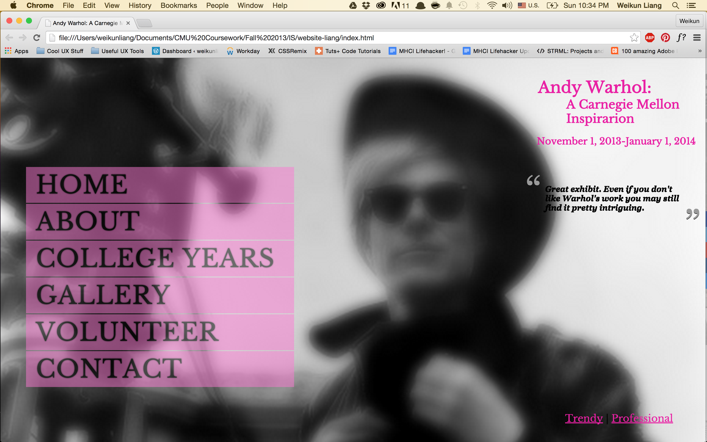
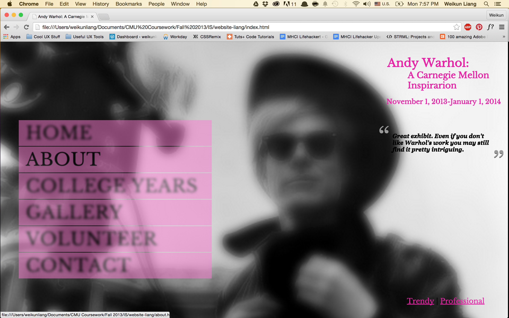
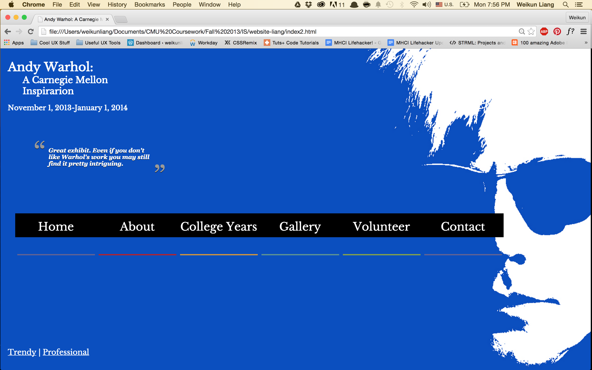

Project Requirement
In my Information Systems Milieux class, one of our projects was to design and build a website for an upcoming Andy Warhol exhibition. We needed to include information such as navigation using Google Maps to the museum, an interactive gallery to display all the art works, contact forms, etc.For the landing page, we had to create 2 designs of it - one with a trendy feel and one with a professional feel.
Design
This was the trendy design of the landing page.
When the user hovers over any menu item, the other menu item blurs out. (See 'About')

This was the professional design of the landing page.

When the user hovers over any of the menu item, the colored bar underneath it moves up and becomes the background color for that menu item. (See 'About')

Find the code to the whole website here.